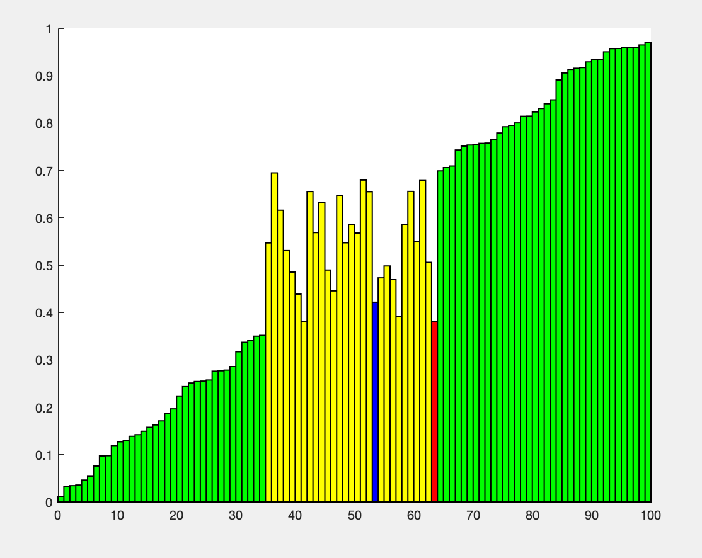

Cocktail Shaker Sort
A script that animates the Cocktail Shaker sorting algorithm.
Download Code [.m]
This is an animation of the Cocktail Shaker sorting algorithm, also known as a bidirectional bubble sort. A randomly generated array is created and each element's magnitude is represented by the height of each rectangle. Essentially, the algorithm looks for the maximum element on the way up, and places it at the last element of the array. It then looks for the minimum element on the way down, and places it at the beginning of the array. This process continues until the algorithm converges at the middle and the array is completely sorted.